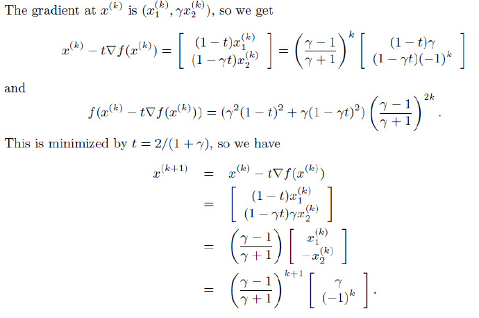

本章进入凸优化问题的求解、算法阶段。
无约束优化问题
本文讨论一下无约束问题：
minf(x)
其中，f是二次可微凸函数。假定该问题可解，即存在最优解x⋆，用p⋆表示最优值为：infxf(x)=f(x⋆)。
因为f可微，则最优点x⋆满足以下条件：
▽f(x⋆)=0
在特殊情况下，我们可以通过解析法求解最优性方程，但大多数情况下没有办法求得解析解。因此，最常见的方法是使用迭代法。
我们需要计算点列：x(0),x(1),..，使得k→∞,f(x(k))→p⋆。使用ϵ表示容许误差值，当f(x(k))−p⋆≤ϵ时，算法终止。
例子p438
二次优化
min(1/2)xTPx+qTx+r
很容易我们可以对其求导得到Px⋆+q=0。
因此，若P为正定矩阵，则存在唯一解x⋆=−P−1q。
若此方程无解，则优化问题无下界。
最小二乘
作为二次优化的特例：
min∣∣Ax−b∣∣22=xT(ATA)x−2(ATb)Tx+bTb
其最优性解为其正规方程：
ATAx⋆=ATb
强凸性
强凸是指：
▽2f(x)⪰mI
对任意x∈S都成立。这里的▽2f(x)表示Hessian矩阵。
我们可以通过强凸性推导出有意义的方程。
次优性条件
f(y)=f(x)+∇f(x)T(y−x)+21(y−x)T∇2f(z)(y−x)≥f(x)+∇f(x)T(y−x)+2m∥y−x∥22
当m=0时，上式变为凸性的基本不等式（一阶可微），当m≥0时，对f(y)的下界得到了更好的估计结果。
对上式进行求导可得：▽f(x)+m(y−x)=0
因此，带入原式可得：
f(y)≥f(x)+∇f(x)T(y−x)+2m∥y−x∥22≥f(x)−2m1∥∇f(x)∥22
既然该式子对任意y∈S都成立，则：
p⋆≥f(x)−2m1∣∣▽f(x)∣∣22
由于∣∣▽f(x)∣∣2≤(2mϵ)1/2，因此带入可得到次优性条件：
f(x)−p⋆≤ϵ
我们也可以得到x与任意最优解x⋆之间的距离与∣∣▽f(x)∣∣2的关系：
∣∣x−x⋆∣∣2≤m2∣∣▽f(x)∣∣2
关于▽2f(x)的上界
由于∣∣▽2f(x)∣∣的最大特征值是x在S上的连续函数，因此他在S上有界，即存在常数M，使得(没懂)：
∣∣▽2f(x)∣∣⪯MI
与上面类似，我们可以得到p⋆的上界：
p⋆≤f(x)−2M1∣∣▽2f(x)∣∣22
对比p⋆的上界：
p⋆≥f(x)−2m1∣∣▽f(x)∣∣22
下水平集的条件数
从之前的分析我们可以得到：
mI⪯∣∣▽2f(x)∣∣⪯MI
因此，比值M/m是矩阵▽2f(x)的条件数的上界，这是影响其计算效率的重要因素。
下降方法
我们讨论的所有方法都是下降方法，只要不是最优点则应该满足：
f(x(k+1))<f(x(k))
而优化点列为：
x(k+1)=x(k)+t(k)△x(k),t(k)>0
由凸性可知▽f(x(k))T(y−k(k))≥0意味着f(y)≥f(x(k))，因此，一个下降方法的搜索方向必须满足：
▽f(x(k))TΔx(k)<0
这将作为我们判断后面下降算法的条件之一。
通用下降算法
- 确定下降方向Δx
- 直线搜索。选择步长t>0
- 修改。x:=x+tΔx
- 直到满足停止条件
精确直线搜索p444
t值是通过沿着射线{x+t△x∣t≥0}优化f而确定的：
t=args≥0minf(x+s△x)
当求解式中的单变量优化问题的成本比计算搜索方向的成本低时，采用精确直线搜索。
特殊情况可以用解析的方法确定最优解。
回溯直线搜索
很多时候我们并不需要找到一个最小的t，只需要f有“足够的”减少即可。
常用的方法为：
- 给定下降方向Δx,参数α∈(0,0.5),β∈(0,1)
- 设定初始t=1
- iff(x+t△x)>f(x)+αt▽f(x)T△x,thent:=βt
回溯算法从单位步长开始，按比例逐渐减小，直到满足停止条件。
由于Δx是下降方向，▽f(x)TΔx<0，所以只要t足够小，一定有：
f(x+tΔx)≈f(x)+t▽f(x)TΔx<f(x)+tα▽f(x)TΔx
因此回溯算法一定会停止。
梯度下降方法
梯度下降利用△x=−▽f(x)，是一种自然的选择。
算法过程
- 给定初始点x∈domf，Δx:=▽f(x)
- 直线搜索。通过精确或回溯直线搜索确定步长t
- 修改x:=x+tΔx
- 直到满足停止准则
收敛性分析
我们可以推导得出：
f(x(k))−p⋆≤ck(f(x(0))−p⋆)
其中c=1−m/M<1，因此最多经过log(1/c)log(f(x(0))−p⋆)/ϵ次迭代，可以收敛到次优性条件。
例子
R2空间中的二次问题
考虑二次目标函数
f(x)=21(x12+γx22)
其中γ大于0。很容易得到其Hessian矩阵为常数，特征值为1和γ，因此其下水平集的条件数都等于：
min(1,γ)max(1,γ)=max(γ,1/γ)
我们选取初始点x(0)=(γ,1)，可以计算：

最速下降方法p454
对f(x+v)在x处进行一阶Taylor展开：
f(x+v)≈f^(x+v)=f(x)+▽f(x)Tv
其中▽f(x)Tv是f在x在沿着方向v的方向导数，若其为负数，则v为下降方向。
如何选择v使得其方向导数尽可能小（下降最快），我们定义一个规范化的最速下降方向：
Δxnsd=argmin{▽f(x)Tv ∣ ∣∣v∣∣=1}
我们也可以考虑将最速下降方向乘以一个特殊的比例因子，从而考虑非规范化的最速下降方向：
Δxsd=∣∣▽f(x)∣∣⋆Δxnsd
其中∣∣⊙∣∣⋆定义为对偶范数（∣∣z∣∣⋆=sup{zTx∣∣∣x∣∣≤1}）。
对于这种最速下降步径，我们有：
∇f(x)TΔxsd=∥∇f(x)∥⋆∇f(x)TΔxnsd=−∥∇f(x)∥⋆2<0
Newton方法p462
Newton步径
Δxnt=−▽2f(x)−1▽f(x)
由▽2f(x)的正定性可知（凸函数的二阶条件），除非▽f(x)=0，否则：
▽f(x)TΔx=−▽f(x)T▽2f(x)−1▽f(x)<0
因此，Δxnt与负梯度方向为锐角，Δxnt是下降方向。
可以从以下几个方面来了解Newton步径。
二阶近似的最优解
考虑函数f在x处的二阶Taylor近似为：
f(x+v)^=f(x)+▽f(x)Tv+21vTf(x)v
这是v的二次凸函数，在v=Δxnt处达到最小值。
因此，将x加上Newton步径Δxnt能够极小化f在x处的二阶近似。
如果函数是二次的，那么使用Newton步径是f的精确最优解。若函数近似二次，则x+Δxnt是f的最优解，即x⋆的很好的估计值。
Hessian范数下的最速下降方向
若定义Hessian矩阵▽2f(x)定义的二次范数，即：
∣∣u∣∣▽2f(x)=(uT▽2f(x)u)1/2
那么可以通过最速下降方向推出Δxnt。
线性化最优性条件的解
若我们在x附近对最优性条件▽f(x⋆)=0进行线性化，可得到：
▽f(x+v)≈▽f(x)+▽2f(x)v=0
其解就是我们的Newton步径。
Newton减量p464
λ(x)=(▽f(x)T▽2f(x)−1▽f(x))1/2
λ(x)称为Newton减量，可以用来设计停止准则。
将Δxnt带入f(x+tΔx)得：f(x+tΔx)=f(x)−21▽Tf(x)▽2f(x)−1▽f(x)
因此：f(x)−f(x+tΔx)=21▽Tf(x)▽2f(x)−1▽f(x)=21λ(x)2
因此，λ/2是f在x处的二阶近似对f(x)−p⋆作出的估计。
我们也可以将Newton减量表示为λ=(ΔxntT▽2f(x)Δxnt)1/2，表明λ是Newton步径的二次范数，该范数由Hessian矩阵定义。
Newton减量也出现在回溯直线搜索中，因为我们可以得到：
▽Tf(x)Δxnt=−λ(x)2
Newton方法
- 给定初始点x∈domf，误差阈值ϵ>0
- 计算Newton步径和减量
- 停止准则：如果λ2/2≤ϵ，退出
- 直线搜索，根据回溯直线搜索确定步长t
- 改进：x:=x+tΔxnt